Recent advances in deep learning for remote sensing rely heavily on large annotated datasets, yet acquiring high-quality ground truth for geometric, radiometric and multi-domain tasks remains costly and often infeasible. We present SyMTRS, a large-scale synthetic dataset generated with a high-fidelity urban simulation pipeline. It provides 2048 × 2048 RGB aerial imagery, pixel-perfect depth, night-time counterparts for domain adaptation, shadow-free renders, five-class masks, and aligned low-resolution variants at ×2, ×4 and ×8. Unlike datasets that focus on a single task or modality, SyMTRS is a unified multi-task benchmark for geometric understanding, cross-domain robustness and resolution enhancement.
SyMTRS. One capture. Five benchmarks.
One Unreal Engine 5 city, rendered five ways — RGB by day and by night, shadow-free, metric depth in metres, and a five-class mask — perfectly registered at 2048 × 2048. The benchmark scores monocular depth, segmentation, domain adaptation, shadow removal and super-resolution on the very same frames.
- Frames
- 20,000
- Tasks
- 5
- Resolution
- 20482
- Release
- 767 GB
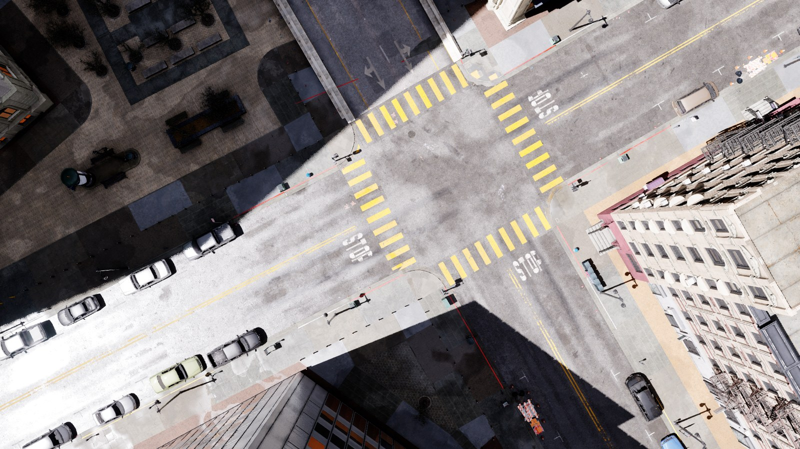
Ground truth that is actually ground truth.
Remote-sensing benchmarks usually inherit one annotation and approximate the rest — depth from stereo, masks from labels, low-resolution pairs from a blur kernel. SyMTRS renders each camera pose once with the environment frozen, so every modality is exact, aligned, and shares a filename.
Five modalities, one geometry.
Split map → camera pose → one frozen-exposure render per pose. The five outputs and the three low-resolution levels come out of the same pass, which is what makes the super-resolution pairs real pairs.
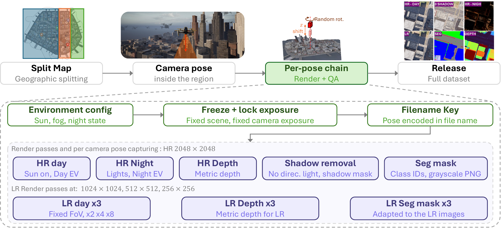
- RGB · day
- RGB · night
- Shadow-free
- Metric depth
- Semantic mask
Five tasks, one folder layout.
A task is a choice of folders, not a separate dataset. Every panel below is a
held-out test/ scene; drag the divider, or let it sweep.
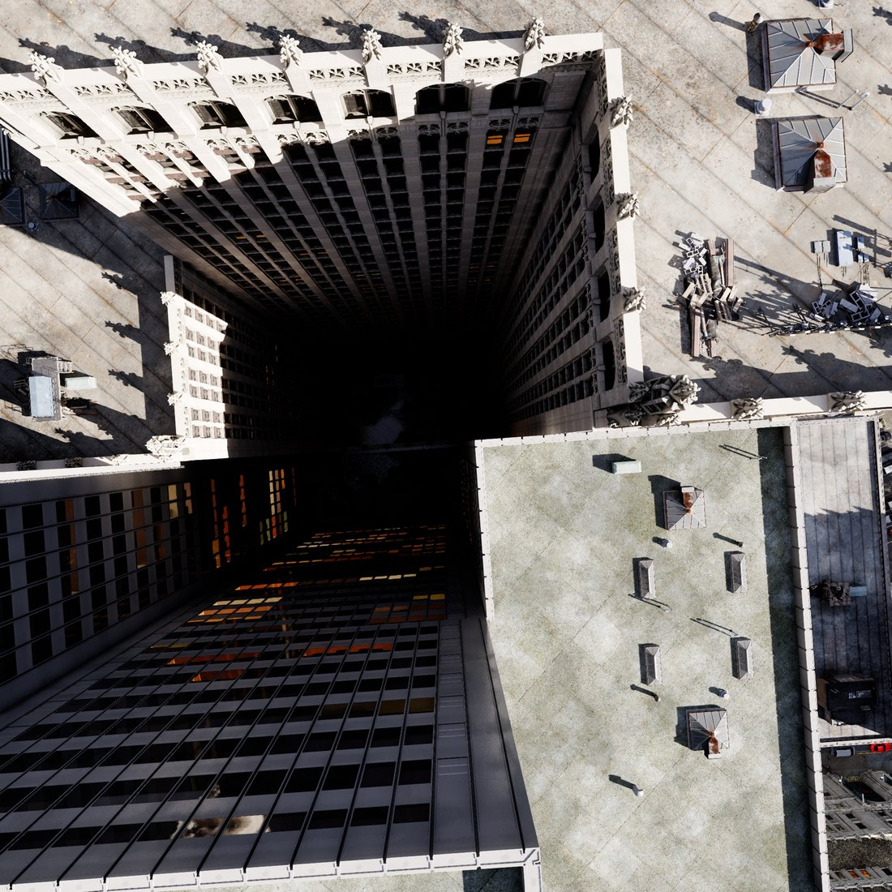
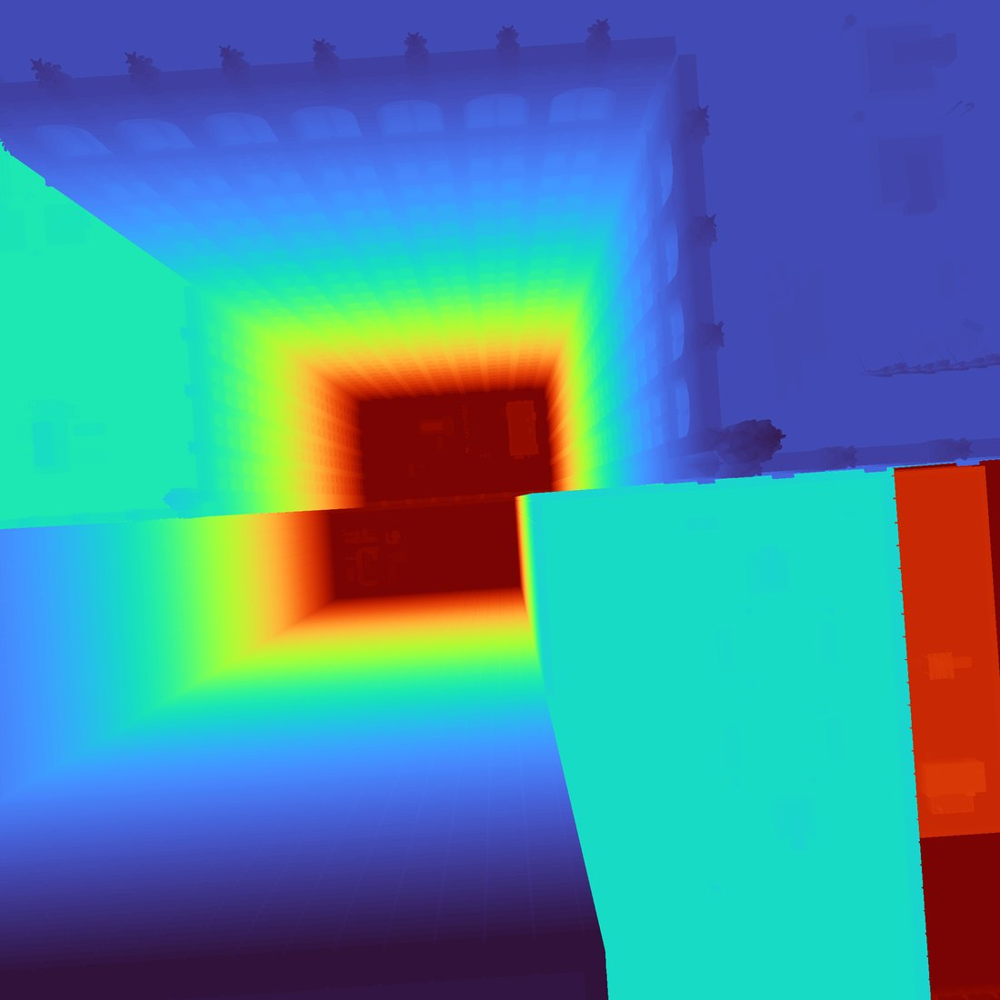
RGB depth · metresMetric depth, without stereo or LiDAR.
The renderer writes a per-pixel distance in metres for every frame. The relative models (MiDaS, Depth Anything 3) are fitted per image in disparity space before scoring — scale only would leave the shift that dominates a nadir view.
- Models
- MiDaS ×5 · Depth Anything 3 ×2
- Protocol
- scale + shift in disparity
- Best, test
- RMSE 18.66 m · δ¹ 0.881
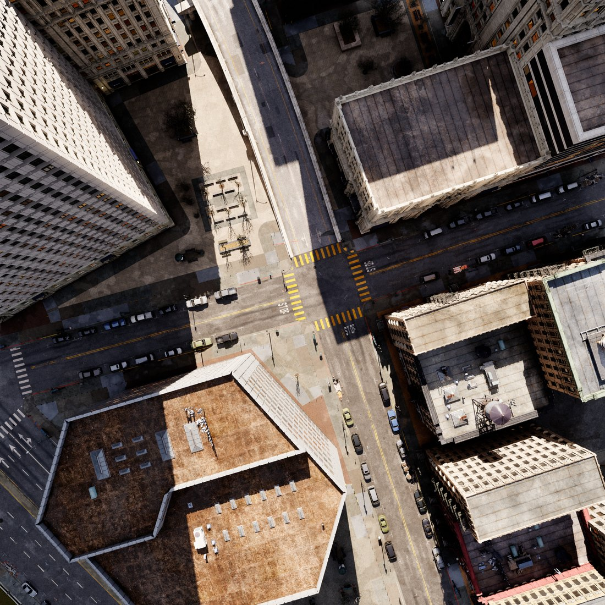
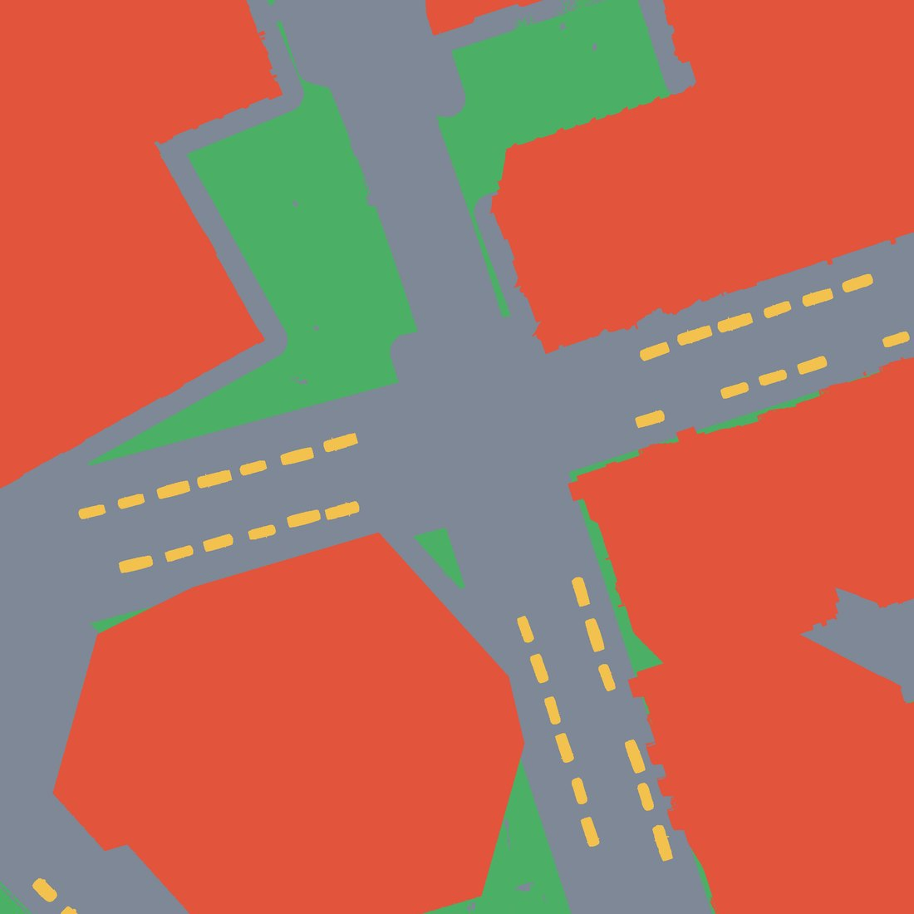
RGB 5 classesFive classes, pixel-perfect.
Background, building, green, road, car — stored as a graylevel class id and decoded exactly. Off-grid values map to the ignore index rather than being guessed, so the metric cannot invent a class.
- Models
- U-Net · DeepLabV3 ×2 · SegFormer ×3
- Classes
- 5 · ignore = 255
- Best, test
- mIoU 0.976 · pixel acc. 0.994

 day
night
day
night
The same street at two o'clock in the morning.
Identical cameras, identical geometry, different light. Unpaired (CycleGAN) and paired (pix2pix) translation are scored by FID and KID against real night imagery — there is no accuracy number for a generated image.
- Models
- CycleGAN · pix2pix · day ⇄ night
- Scoring
- FID / KID vs. real night
- Best, test
- FID 43.4 · KID 0.0149
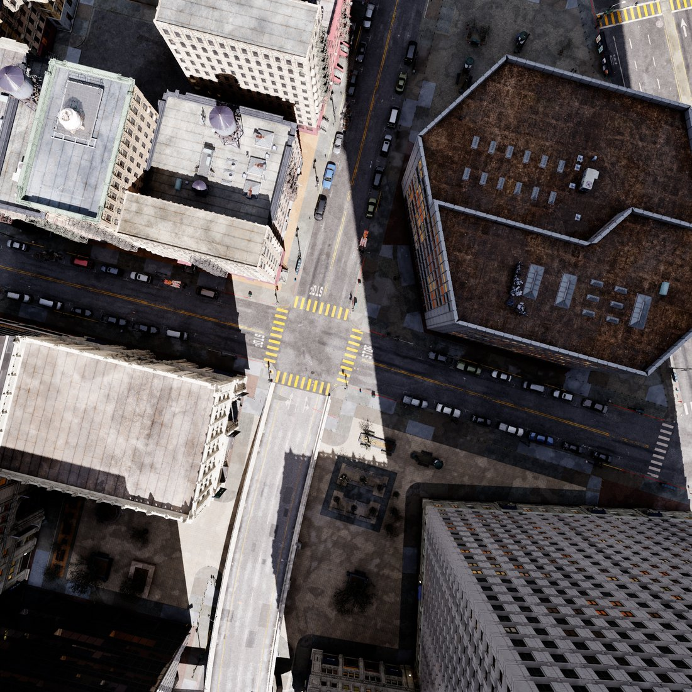
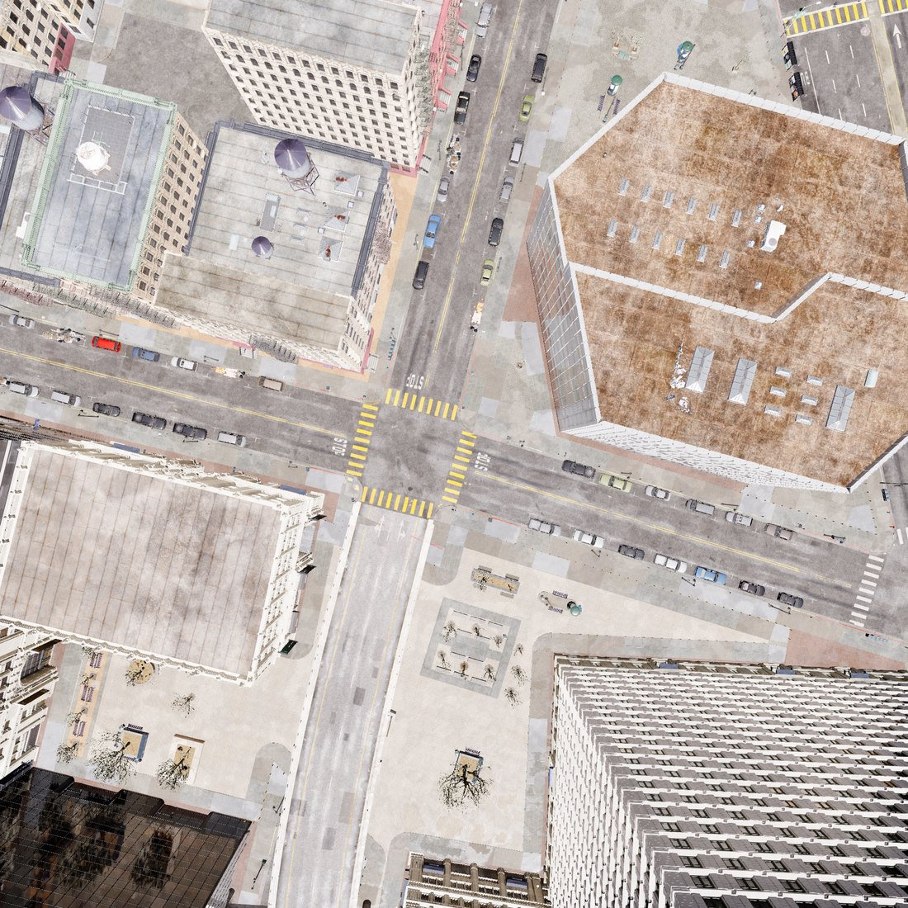
with shadow shadow-freeSun on, sun off.
The shadow-free render is the target. The dataset ships no shadow mask, so the trainer derives one from the difference and scores every model on all, shadow and non-shadow pixels separately.
- Models
- ShadowFormer · Restormer · Uformer · ShadowMaskFormer
- Mask
- derived at train time
- Best, test
- PSNR 23.00 dB · SSIM-Y 0.788
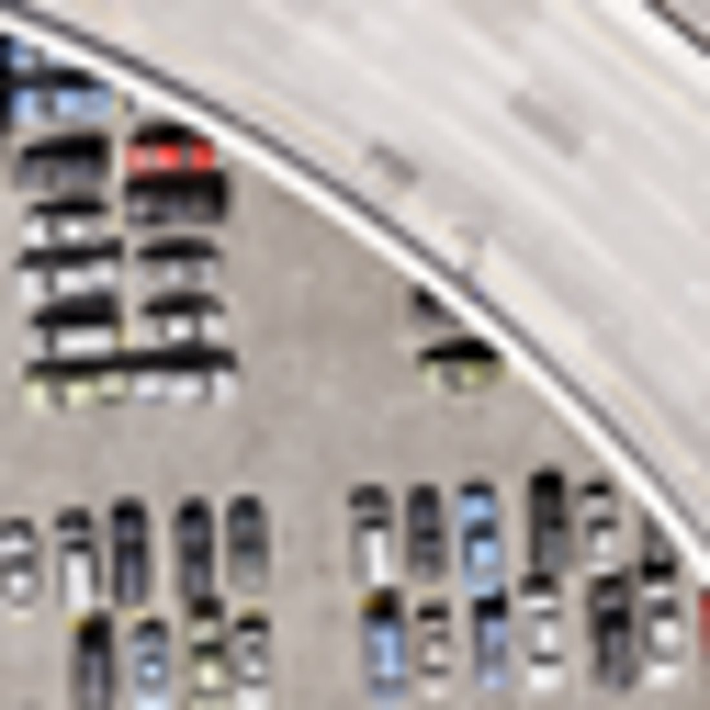
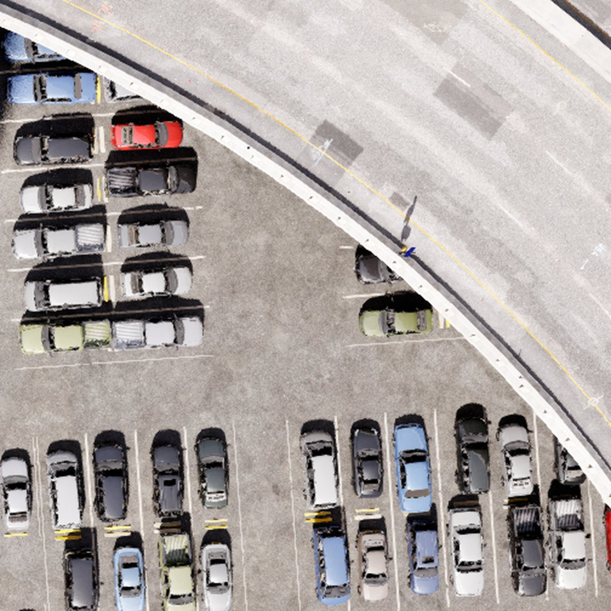
input · 63 px ground truth · 2048 px×2, ×4, ×8 — rendered, not blurred.
The low-resolution level is its own render pass at a coarser sampling, not a downsample of the 2048 frame. The target is always the native high-resolution render: the panel shows the input and that target, while the SwinIR ×8 prediction is the middle column of the grid below.
- Models
- SRCNN · autoencoder · SRGAN · SwinIR
- Scales
- ×1 control · ×2 · ×4 · ×8
- Best, ×8
- PSNR 20.02 dB · SSIM 0.469
Step inside the depth map.
Each cloud is the test scene's own RGB back-projected through its own metric depth with the capture's 60° field of view — the same map the depth models are scored against, not a reconstruction.
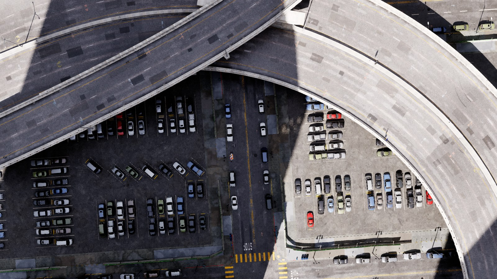
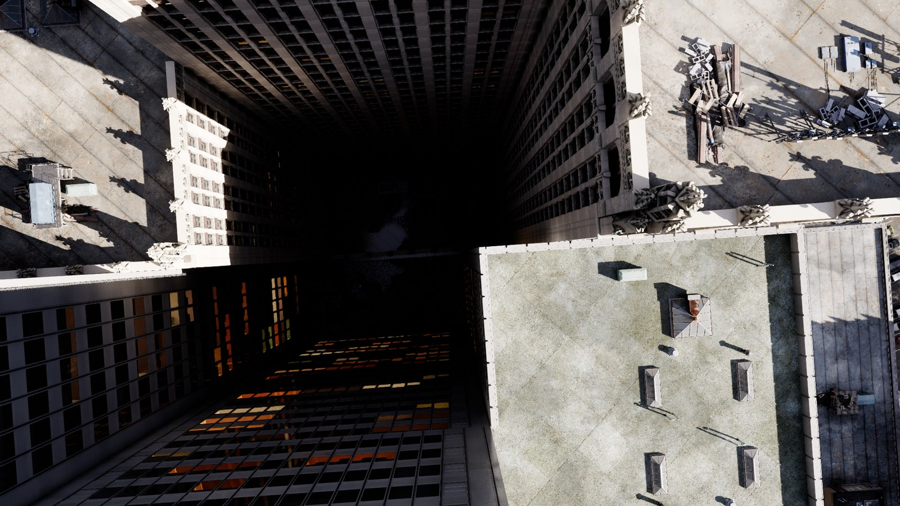
Two scenes, two camera poses, the same rendering pass. Drag to orbit; scroll to
zoom. Built by scripts/make_media.py from the test/ split.
Input, model, ground truth.
One held-out scene per task: the input, a benchmark checkpoint's prediction, and the map it is scored against. Same seed, same split, 3,000 test images per row.

| Task | Model | Protocol | Test metric |
|---|---|---|---|
| Monocular depth | MiDaS DPT-Hybrid, 2048 px | fine-tuned, 20 epochs | RMSE 18.66 m · δ¹ 0.881 |
| Semantic segmentation | SegFormer-B2, 2048 px | fine-tuned, 40 epochs | mIoU 0.976 · pix. acc 0.994 |
| Day → night | CycleGAN | fine-tuned, 40 epochs | FID 43.4 · KID 0.0149 |
| Shadow removal | Restormer | fine-tuned, 50 epochs | PSNR 23.00 dB · SSIM-Y 0.788 |
| Super-resolution ×8 | SwinIR, 2048 px target | fine-tuned, 40 epochs | PSNR 20.02 dB · SSIM 0.469 |
Campaign runs under runs/campaign2/, seed 42. The dataset is being
regenerated in response to reviewer comments; these numbers will be refreshed with
the released revision and are not final.
If SyMTRS helps your work, cite it.
The paper describes the rendering pipeline, the split geography, the per-task protocols and the benchmark numbers shown above.